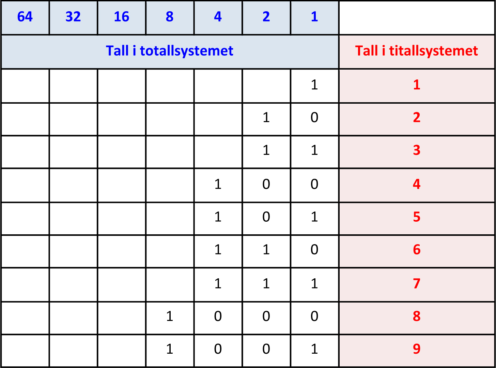

bits,byte
En datamaskin, for eksempel, har en oversetter, vanligvis kalt et operativsystem, mellom mikroprosessoren og brukeren av maskinen, men maskinens ”hjerne” snakker i binærtall.
Eksempel 1
Tallet 10110to10110to er gitt i binærtall. Hva blir tallet i titallssystemet?
Vi har 0 på enerplassen, 1 på toerplassen, 1 på firerplassen, 0 på åtterplassen og til slutt 1 på 16-plassen.
0 ⋅ 20 + 1 ⋅ 2^1 + 1 ⋅ 2^2 + 0 ⋅ 2^3 + 1 ⋅ 2^4 = 0 + 2 + 4 + 0 + 16 = 220 ⋅ 20 + 1 ⋅ 21 + 1 ⋅ 22 + 0 ⋅ 23 + 1 ⋅ 24 = 0 + 2 + 4 + 0 + 16 = 22
10110 i totallssystemet er det samme som 22 i titallssystemet.
Eksempel 2
Tallet 41 er gitt i titallssystemet. Hva blir tallet i totallssystemet?
41 = 32 + 8 + 1 = 1 ⋅ 2^5 + 0 ⋅ 2^4 + 1 ⋅ 2^3 + 0 ⋅ 2^2 + 0 ⋅ 2^1 + 1 ⋅ 2^0
I totallssystemet kan vi derfor skrive 41 som: 101001to
Bits
Ordet «bit» er en betegnelsene på ett av disse tallene, altså 0 eller 1.
Vi kan derfor si at datamaskinen kommuniserer ved hjelp av bits. Bits er den minste dataenheten.
Bytes
En byte er en samling bits. Selv om det finnes variasjoner, sier vi at det i 1 byte finnes 8 bits.
Et tastaturtegn er på 1 byte, som igjen vil si 8 bits.
Bitkoden for bokstaven A kan dermed se slik ut: 0 1 0 0 0 0 0 1 = 65.
Når du skriver bokstaven A på tastaturet, sendes følgende strøm rundt i datamaskinen: av - på - av - av - av - av - av - på
Hexadecimal
There are 16 Hexadecimal digits. They are the same as the decimal digits up to 9, but then there are the letters A, B, C, D, E and F in place of the decimal numbers 10 to 15:
Hexadecimal: 0 1 2 3 4 5 6 7 8 9 A B C D E F
Decimal: 0 1 2 3 4 5 6 7 8 9 10 11 12 13 14 15
So a single Hexadecimal digit can show 16 different values instead of the normal 10.
There are 16 Hexadecimal digits. They are the same as the decimal digits up to 9, but then there are the letters A, B, C, D, E and F in place of the decimal numbers 10 to 15:
Hexadecimal: 0 1 2 3 4 5 6 7 8 9 A B C D E F
Decimal: 0 1 2 3 4 5 6 7 8 9 10 11 12 13 14 15
So a single Hexadecimal digit can show 16 different values instead of the normal 10.
Transitorer
Transistorer er veldig små av og på knapper som enten sender signal av eller på. Transistorer finner du inne i en CPU. En CPU i dag har gjerne 8GB som betyr 1024^3. En CPU blir ofte kalt hjernen til dataen menn er egentlig en kalkulator som regner ut bytes.
Transistorer er veldig små av og på knapper som enten sender signal av eller på. Transistorer finner du inne i en CPU. En CPU i dag har gjerne 8GB som betyr 1024^3. En CPU blir ofte kalt hjernen til dataen menn er egentlig en kalkulator som regner ut bytes.
| 1990 | 2000 | 2010 | 2017 | |
|---|---|---|---|---|
| Cpu | Intel 4004 | |||
| Antall T | 2300 |